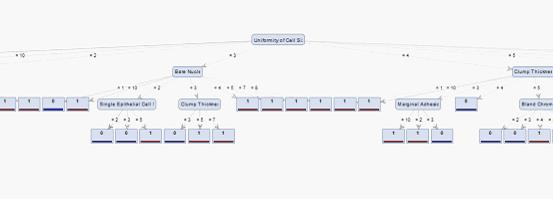

Why you did it?
This was one of the assignment in Doug Raiford's Machine Learning course. We implemented several supervised learning classifiers. A classifier is a model which trained by using training data set for the purpose of classification. The decision tree is built in a recursive approach which find the current best dimension gain with the highest information gain. The assignment was to implement a ID3 decision tree based on the well-know Breast Cancer Wisconsin Data Set. There are totally 629 records in the records, 9 dimensions and a class label which has two values (benign or malignant). The accuracy I achieved for this ID3 classifier is 92%
What it does?
Typically, a decision classifier can do the classification according to those dimensions of a unknow sample (the class label is unknow) from the dataset. For each level of the decision tree, it asks a question on a specific dimension, and goes to another decision tree node on the next level according to the value on that diemnsion.
How you built it?
I first read in the training data, the I wrote a function the calculate the entropy for a specific sample set. I wrote another function to calculate the information gain for a selected dimension on a data set. For the data structure, I create a class called DecisionTreeNode, it has a integer variable called classlabel which determines the class label of all samples on this node, (1 or 0) , if samples on this node contains different class label, the classLabel variable will equals 2 which means this node is not a leaf of decision tree. The node has another integer variable called dimId which is the question on this node (Question on which dimension). There is a list on the node to store all the question available for this node, after we determined which question to ask, that dimension id will be removed from the list and the list will be passed to the node on next level (if this is not a leaf node). There is another list on the node which store all the samples need to be classified on this node. After our question, this list will be divided and passed to next level( if this is not a leaf node). There is a hash map on the decision tree node, the key of the hash map is the answer to the question of current node, the value is a pointer points to a node on the next level. I build the decision tree in an recursive approach. For a node, I will first calculate all the information gain for the available dimensions for this node then find the dimension with maximum information gain ( this will be the question). Remove this dimension from the dimension list, and divide the sample list and recursively create the node for the next level until it's a leaf node.
What did you learn?
In this assignment, I learned how to use a tokenizer in Java to read in data in .csv format. I learned how to calculate the entropy and information gain, how to build a decision tree by using a recursive approach.